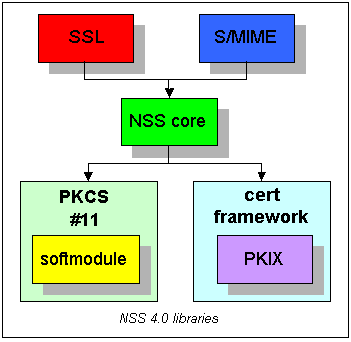
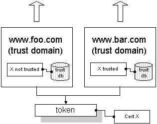
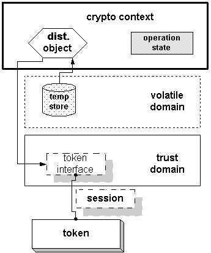

|

The NSS 4.0 distribution consists of five shared libraries. Three of those libraries implement the API available to all NSS applications:
The second framework used by NSS is PKCS #11. This standard API allows NSS to store and retrieve objects, generate keys, and perform cryptographic operations on devices such as smart cards and hardware accelerators. The NSS distribution includes implementations of the two frameworks described above. The first is the PKIX library, which implements the certificate framework for X.509 certificates (though applications may choose to define specific revocation functionality). The second is the software PKCS #11 module, which provides a software implementation of the PKCS #11 API. |
|
In
the diagram to the left, two trust domains are active in a single NSS process.
Each trust domain represents an SSL server running in the process.
The trust domains share a common token. However, the trust domains
independently assign trust to certificates, so even though both domains
contain certificate X, www.bar.com chooses to trust it while www.foo.com
does not. |

Features of a crypto context:
|
PRStatus
EnableToken (
<_implementor_> *imp,
NSSToken *token
);
means that the API includes two functions:
PRStatus
NSSTrustDomain_EnableToken (
NSSTrustDomain *td,
NSSToken *token
);
and
PRStatus
NSSVolatileDomain_EnableToken (
NSSVolatileDomain *vd,
NSSToken *token
);